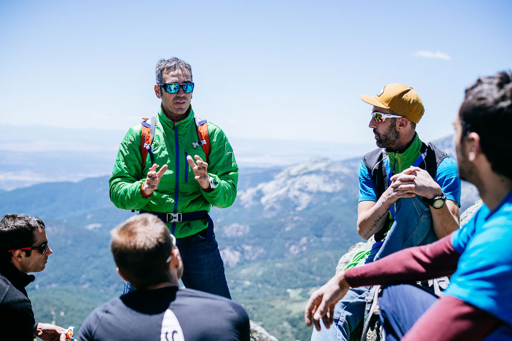
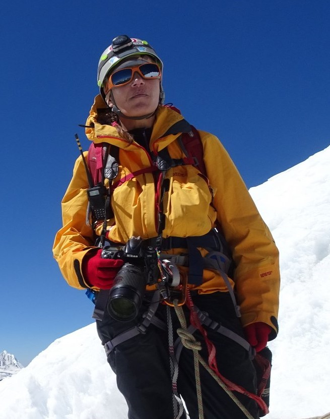

Team
Check our Team

Walter White
Pablo dirige los cursos y salidas de Trekking y Orientación. Luego de haber subido su primer montaña en 1993, Pablo comenzó a dedicar todo su tiempo libre a andar por las montañas hasta que en 1999 dejó su trabajo de oficina para primero trabajar como ayudante de guía y luego organizar cursos, salidas outdoor y carreras de aventura. Teniendo una atracción especial por las montañas poco conocidas, Pablo se interesó especialmente en temas como la orientación y la cartografía, habiendo competido y obtenido el título de campeón nacional de orientación y aventura en el año 2004 y manteniendolo ininterrumpidamente en los años 2005, 2006, y 2007. Entre las expediciones que realizó, ha logrado subir docenas de cumbres +6000m, cruzar transversalmente los hielos continentales y subir incontables montañas de 3000, 4000, y 5000m en Argentina, Perú, Chile e Himalaya.

Pity Alvaro
Alvaro diseña, coordina y dirige todos los cursos y salidas del área Escalada en Roca y Escalada en hielo. En 1980 Alvaro comenzó a andar por las montañas y desde entonces no dejó de hacerlo. A lo largo de los años trabajó en docenas de cursos acumulando cientos de alumnos que no dejan de consultarlo cada vez que quieren llevar adelante alguna expedición. Si bien comenzó a realizar sus primeras actividades de montaña mucho antes , Alvaro se dedica a la escalada y el montañismo desde 1985 en forma ininterrumpida, realizando escalada en roca , hielo y altura; a través de innumerables expediciones en Argentina, Chile y Perú.
